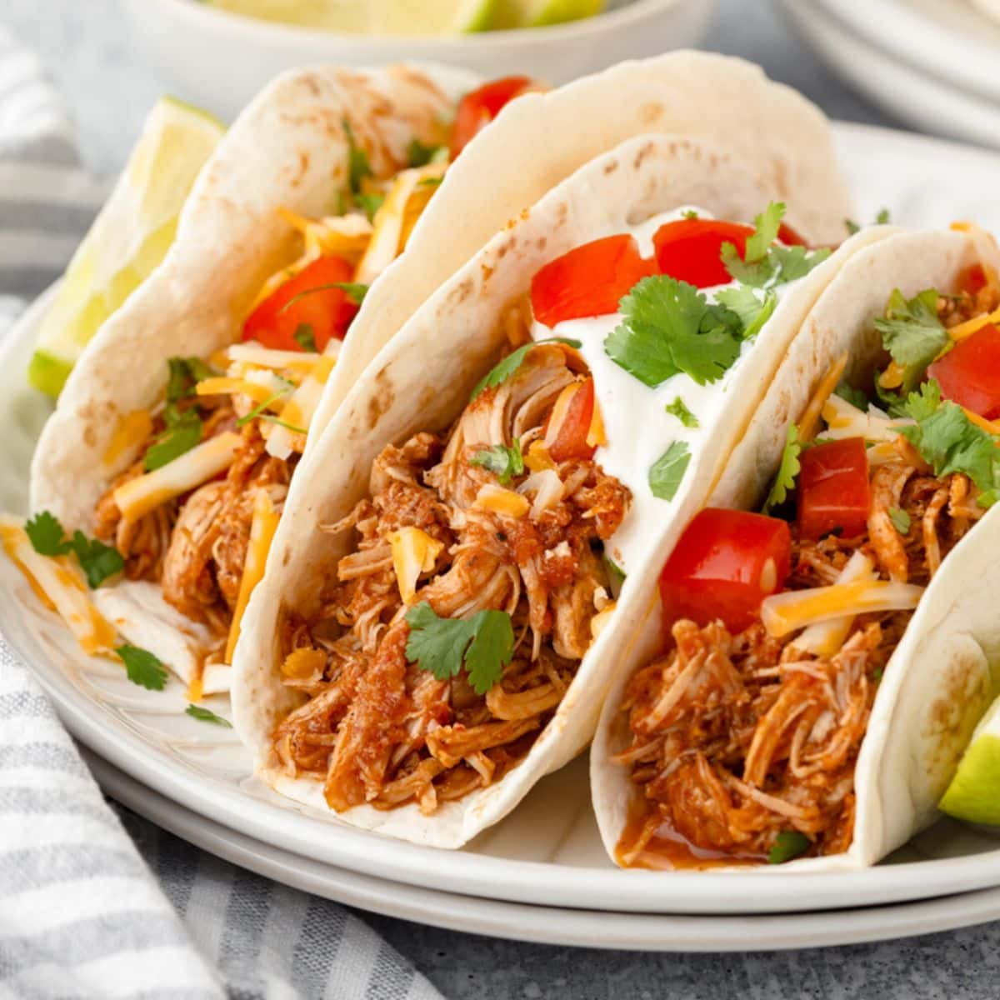

Shredded Chicken Tacos

Bone and skin are left on the chicken breasts so they're extra flavorful
as they simmer in tomato sauce and a blend of savory seasonings.
| Prep time |
Cook time |
Servings |
| 10 Minutes |
40 Minutes |
4 Servings |
Ingredients:
- 2 (8 ounce) cans Goya Tomato Sauce
- 2 teaspoons Goya White Distilled Vinegar
- 2 teaspoons Goya Minced Garlic
- 3 ½ teaspoons ancho chile powder
- 1 teaspoon Goya Ground Cumin
- 2 teaspoons Goya Oregano Leaf
- ½ teaspoon sugar
- 2 tablespoons Goya Extra Virgin Olive Oil
- 2 pounds bone-in, skin-on chicken breasts
- 1 pinch Goya Adobo with Pepper, to taste
- 1 (10 ounce) package Goya Corn Tortillas, warmed
For the garnish:
- ¼ cup finely chopped white onion
- 1 lime, cut into wedges
- 2 tablespoons coarsely chopped fresh cilantro
- 1 dash Goya Hot Sauce
Directions
- In medium bowl, mix together tomato sauce, vinegar, garlic, chili powder, cumin, oregano, and sugar. Season with Adobo; set aside.
- Heat oil in large skillet over medium-high heat. Season chicken with Adobo. Cook chicken, turning once, until light golden brown on both sides, about 5 minutes.
Add reserved tomato sauce mixture to pan; bring to a boil (be careful, the tomato sauce can splatter). Lower heat to medium low.
Simmer, covered, until cooked through (thermometer will register 170 degrees F when inserted into thickest part of breast), flipping once, about 20 minutes.
- Transfer chicken to cutting board; reserve sauce in pan. Remove and discard bones and skin. Using two forks, shred chicken breast.
Transfer chicken to skillet with sauce, mixing to combine; continue to cook until sauce reduces and blends into chicken,
and mixture begins to caramelize, about 10 minutes more.
- Transfer chicken mixture to serving bowl. Spoon into warmed corn tortillas.
Garnish with lettuce, tomatoes, avocados and/or onions, if desired. Sprinkle with hot sauce, if desired.
Done! You have now made yourself some delicious Shredded Chicken Tacos!